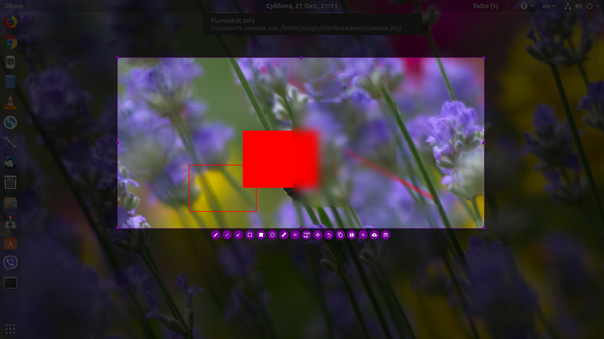
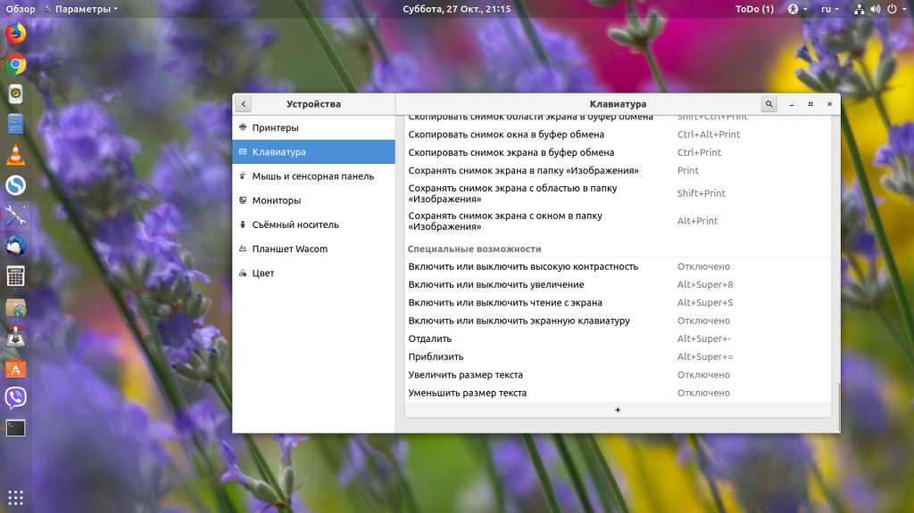
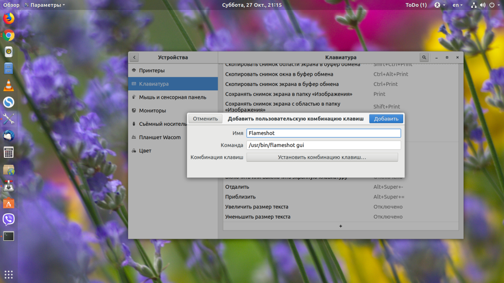

FLAMESHOT
Основные возможности программы:
Flameshot - это довольно впечатляющий инструмент для снимков экрана, который появился на Github в прошлом году. Если вам нужна программа для снимков экрана, которая позволяет аннотировать, размывать, отмечать, а также загружать изображения в imgur, то эта программа отлично подойдёт. Кроме того, эта программа постоянно дорабатывается и обновляется.
Теперь рассмотрим, как её установить. В Ubuntu для этого можно использовать команду:
sudo add-apt-repository ppa:atareao/flameshot
sudo apt update
sudo apt install flameshot
Теперь после запуска программы в трее появится значок. Для создания снимка экрана достаточно выполнить по нему двойной клик. Дальше надо выбрать область для выполнения снимка:

После установки утилиту нужно настроить. Наверное, вы хотите, чтобы она всегда запускалась, когда вы нажимаете PrtSc. Для этого выполните такую последовательность действий:
Откройте настройки системы и перейдите в настройки клавиатуры. Здесь перечислены все сочетания клавиш. Пролистайте в низ и нажмите кнопку со значком +:

В открывшемся окне вам надо будет ввести имя нового сочетания клавиш, а также команду запуска Flameshot:
/usr/bin/flameshot gui

Далее осталось только выбрать горячую клавишу для запуска программы. Нажмите PrtSc. Система предупредит, что функциональность по умолчанию для этой клавиши будет отключена, соглашайтесь. Если установить эту кнопку не получится, то сначала надо отключить использование её для снимка экрана. Вы найдёте её немного выше в этом окне.